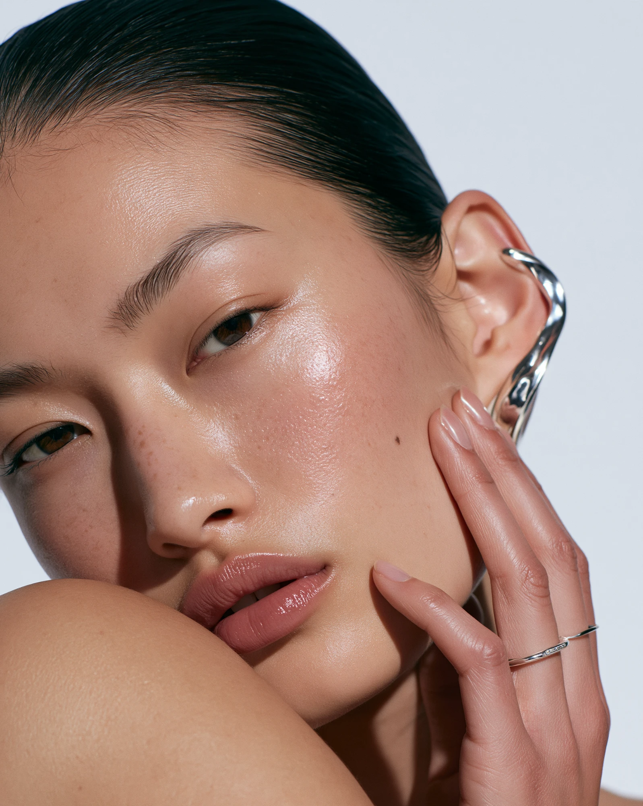
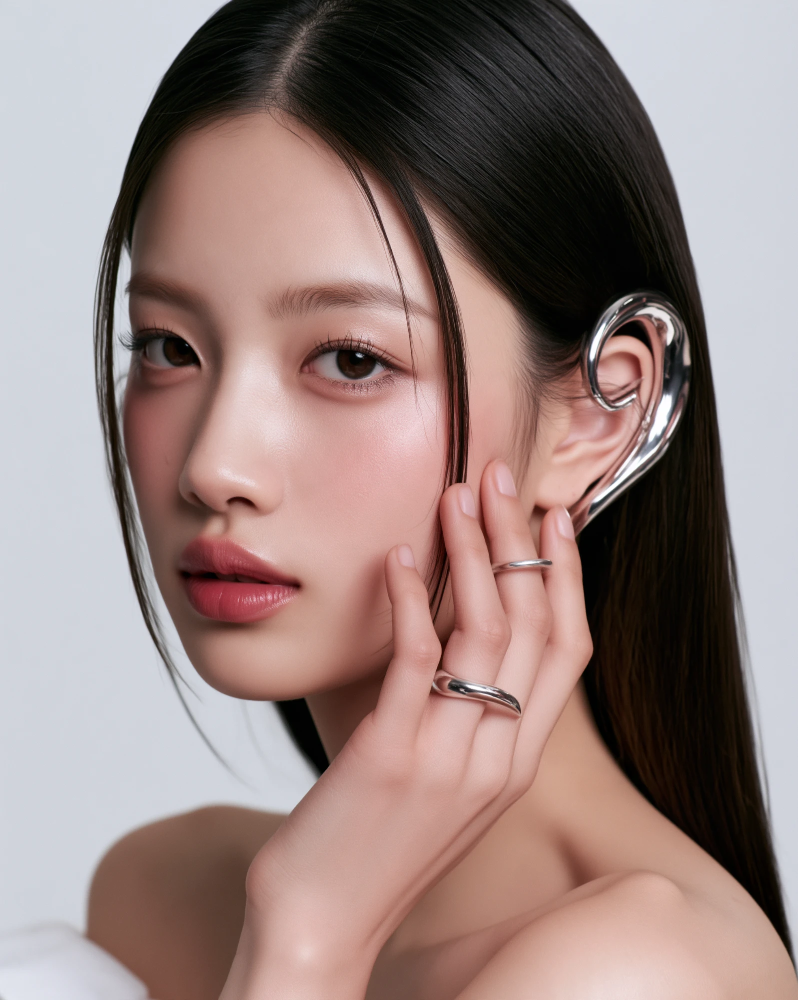
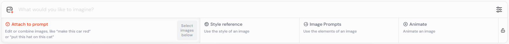
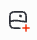
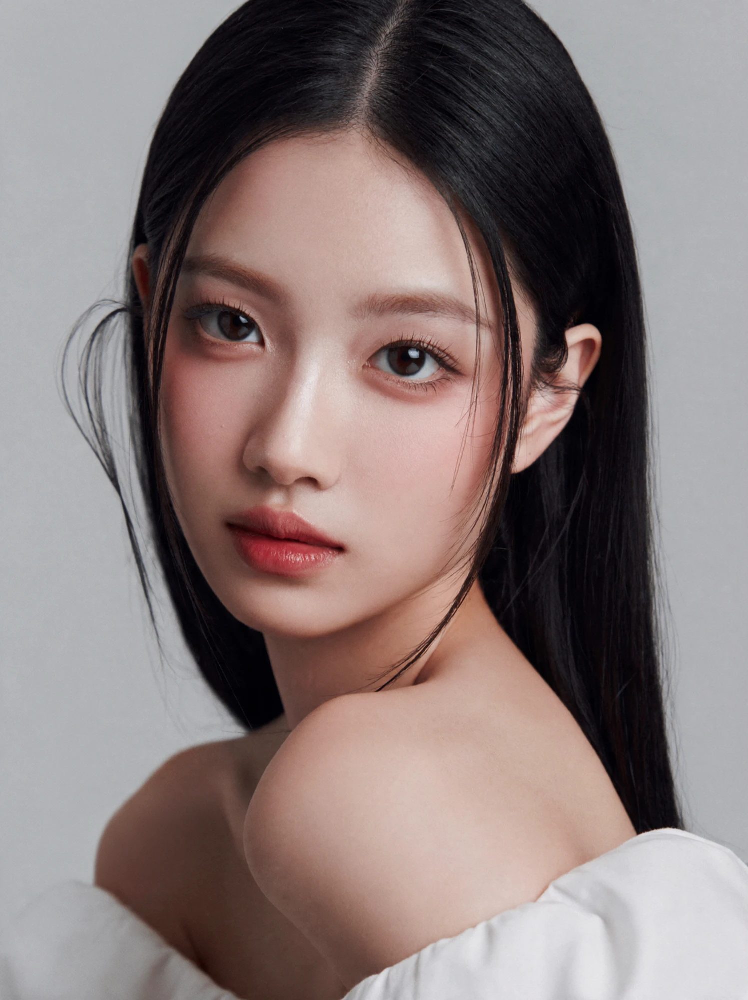
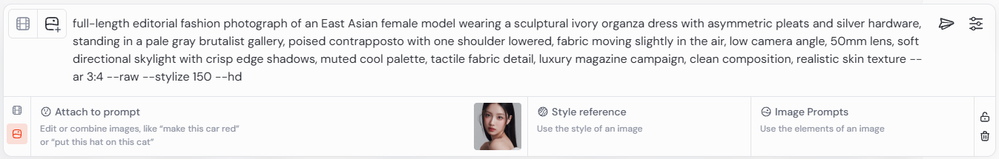
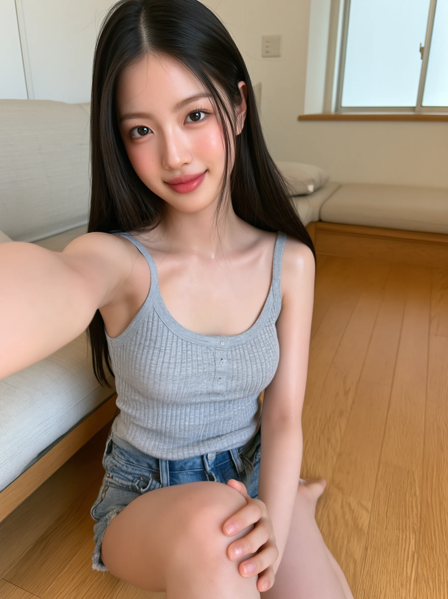
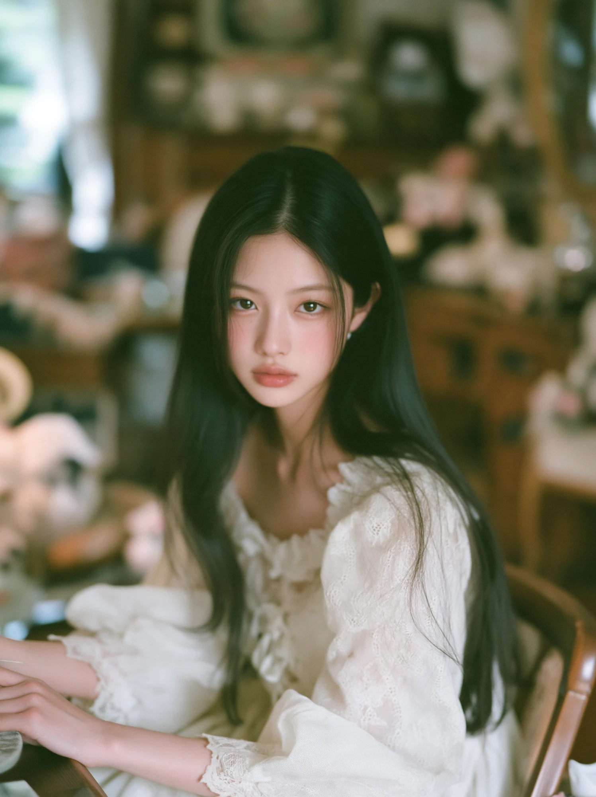
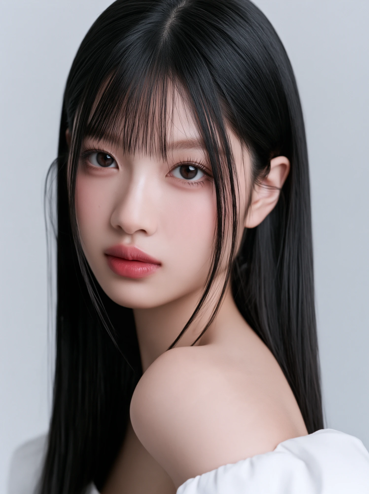

<title>미드저니 v8.2 인물 일관성</title>
<link rel="stylesheet" href="./common.css">
<link rel="preconnect" href="https://fonts.googleapis.com">
<link rel="stylesheet" href="https://fonts.googleapis.com/css2?family=Inter:wght@400;500;600&display=swap">
<style>
@media(prefers-color-scheme:dark){
  :root:not([data-theme="light"]){
    --paper:#0f1117;--ink:#edeae5;--accent:#7b93d4;--muted:#7a8499;
    --border:#1e2333;--code-bg:#161b27;--tag-bg:#1a2030
  }
}
:root[data-theme="dark"]{
  --paper:#0f1117;--ink:#edeae5;--accent:#7b93d4;--muted:#7a8499;
  --border:#1e2333;--code-bg:#161b27;--tag-bg:#1a2030
}
*{box-sizing:border-box;margin:0;padding:0}
body{background:var(--paper);color:var(--ink);font-family:'Inter',var(--sans);line-height:1.6;min-height:100vh}
a{color:var(--accent);text-decoration:none}
a:hover{text-decoration:underline}

.site-header{border-bottom:1px solid var(--border);padding:1rem 2rem;display:flex;align-items:center;gap:1rem}
.site-header a{color:var(--muted);font-size:.85rem;letter-spacing:.04em}
.site-header a:hover{color:var(--accent);text-decoration:none}
.site-header .sep{color:var(--border)}

.hero{padding:3.5rem 2rem 2.5rem;max-width:960px;margin:0 auto}
.eyebrow{font-size:.7rem;letter-spacing:.14em;text-transform:uppercase;color:var(--accent);margin-bottom:.75rem}
.hero h1{font-family:'Inter',sans-serif;font-size:clamp(1.8rem,4.5vw,2.8rem);font-weight:600;line-height:1.1;margin-bottom:1rem;letter-spacing:-.02em}
.hero h1 span{color:var(--muted);font-weight:400}
.meta{display:flex;flex-wrap:wrap;gap:.5rem;margin-bottom:1.5rem}
.tag{background:var(--tag-bg,#edeae2);color:var(--muted);font-size:.7rem;padding:.2rem .6rem;border-radius:2px;letter-spacing:.04em;text-transform:uppercase}
.summary-box{border-left:3px solid var(--accent);padding:.9rem 1.25rem;background:var(--code-bg,#f5f2ee);font-size:.875rem;color:var(--muted);line-height:1.8;border-radius:0 4px 4px 0}
.summary-box strong{color:var(--ink)}

.content{max-width:960px;margin:0 auto;padding:0 2rem 6rem}

.sec-hd{display:flex;align-items:baseline;gap:.85rem;padding-top:2.75rem;margin-bottom:1.5rem;border-top:1px solid var(--border)}
.sec-hd h2{font-size:1.15rem;font-weight:600;letter-spacing:-.01em}
.sec-num{font-family:var(--mono);font-size:.68rem;color:var(--muted);letter-spacing:.1em}

p.body{font-size:.875rem;color:var(--muted);line-height:1.8;margin-bottom:.75rem}
p.body strong{color:var(--ink)}

hr.divider{border:none;border-top:1px solid var(--border);margin:2.5rem 0}

/* Screenshot / image display */
.screen-wrap{margin:1.25rem 0;border-radius:6px;overflow:hidden;border:1px solid var(--border)}
.screen-wrap img{width:100%;display:block}

/* Portrait reference */
.portrait-wrap{margin:1.25rem 0;max-width:420px}
.portrait-wrap img{width:100%;border-radius:6px;border:1px solid var(--border);display:block}
.img-caption{font-family:var(--mono);font-size:.68rem;color:var(--muted);margin-top:.5rem;letter-spacing:.04em}

/* Step list */
.step-list{list-style:none;padding:0;margin:.75rem 0 1.25rem;display:flex;flex-direction:column;gap:.6rem}
.step-list li{font-size:.875rem;color:var(--muted);line-height:1.75;display:flex;gap:.75rem;align-items:flex-start}
.step-num{font-family:var(--mono);font-size:.68rem;color:var(--accent);background:var(--tag-bg);padding:.15rem .45rem;border-radius:2px;flex-shrink:0;margin-top:.2rem}

/* Prompt box */
.prompt-box{border:1px solid var(--border);border-radius:4px;overflow:hidden;margin:1rem 0 1.5rem;background:var(--code-bg)}
.prompt-header{display:flex;justify-content:space-between;align-items:center;padding:.45rem 1rem;border-bottom:1px solid var(--border)}
.prompt-label{font-family:var(--mono);font-size:.68rem;color:var(--muted);letter-spacing:.06em;text-transform:uppercase}
.copy-btn{position:static;font-family:var(--mono);font-size:.68rem;color:var(--accent);background:none;border:1px solid var(--accent);padding:.18rem .55rem;border-radius:2px;cursor:pointer;transition:all .15s;flex-shrink:0}
.copy-btn:hover{background:var(--accent);color:#fff}
.prompt-body{padding:.9rem 1rem;font-family:var(--mono);font-size:.775rem;line-height:1.75;color:var(--ink);white-space:pre-wrap;word-break:break-word}

/* Info callout */
.callout{background:var(--code-bg);border:1px solid var(--border);border-radius:4px;padding:.85rem 1.1rem;font-size:.875rem;color:var(--muted);line-height:1.8;margin:1rem 0}
.callout strong{color:var(--ink)}

/* Gallery grid (3-col) */
.gallery-grid{display:grid;grid-template-columns:repeat(3,1fr);gap:.75rem;margin:1.25rem 0}
.gallery-grid img{width:100%;display:block;border-radius:6px;border:1px solid var(--border)}

/* Comparison grid */
.compare-grid{display:grid;grid-template-columns:1fr 1fr;gap:1rem;margin:1.25rem 0}
.compare-item{}
.compare-item img{width:100%;display:block;border-radius:6px;border:1px solid var(--border)}
.compare-label{font-family:'Inter',var(--sans);font-size:.875rem;color:var(--muted);margin-top:.5rem;text-align:center}
.compare-label strong{color:var(--accent)}
</style>

<header class="site-header">
  <a href="./index.html">← 레시피 홈</a>
  <span class="sep">|</span>
  <a href="#">미드저니 v8.2 인물 일관성</a>
</header>

<section class="hero">
  <p class="eyebrow">Midjourney · 인물 일관성</p>
  <h1>미드저니 v8.2에서<br><span>인물 일관성 유지하기</span></h1>
  <div class="meta">
    <span class="tag">Midjourney</span>
    <span class="tag">v8.2</span>
    <span class="tag">인물 일관성</span>
    <span class="tag">참조 이미지</span>
  </div>
  <div class="summary-box">
    <strong>핵심 요약</strong> — 텍스트 프롬프트만으로는 미드저니에서 인물 외형을 고정할 수 없습니다. V8.1·V8.2에서는 <strong>Attach to prompt</strong> 기능에 기준 인물 사진을 첨부해 어느 정도 일관성을 유지할 수 있습니다.
  </div>
</section>

<main class="content">

<!-- 결과 비교 -->
<div class="sec-hd"><span class="sec-num">—</span><h2>결과 비교</h2></div>

<div class="prompt-box" id="p-compare">
  <div class="prompt-header">
    <span class="prompt-label">사용 프롬프트 / Midjourney v8.2</span>
    <button class="copy-btn" data-target="p-compare">Copy</button>
  </div>
  <pre class="prompt-body">tight beauty and jewelry campaign portrait of an East Asian female model wearing a polished silver sculptural ear cuff and a slender matching ring, face turned three-quarter toward the camera, fingertips resting lightly near her cheek without covering the jewelry, sleek pulled-back hair, clean neutral background, 85mm lens, large diffused softbox from camera left with a narrow rim light catching the metal edges, luminous realistic skin with visible natural texture, soft rose mute makeup, precise highlights, premium cosmetics and jewelry advertising, elegant minimal composition --ar 4:5 --raw --hd</pre>
</div>

<div class="compare-grid">
  <div class="compare-item">
    
    <p class="compare-label"><strong>프롬프트만으로 생성</strong></p>
  </div>
  <div class="compare-item">
    
    <p class="compare-label"><strong>참조 이미지 첨부 후 생성</strong></p>
  </div>
</div>

<hr class="divider">

<!-- 01 -->
<div class="sec-hd"><span class="sec-num">01</span><h2>텍스트 프롬프트만으로는 부족합니다</h2></div>
<p class="body">동일한 외형 묘사를 반복하면 인물의 외모 방향성을 유지하는 데 도움이 되지만, 사실 <strong>텍스트 프롬프트만으로 미드저니에서 인물 일관성을 고정할 수는 없습니다.</strong></p>
<p class="body">이때 사용하면 좋은 기능이 <strong>참조 이미지 기능</strong>입니다.</p>

<hr class="divider">

<!-- 02 -->
<div class="sec-hd"><span class="sec-num">02</span><h2>V7 vs V8.1·V8.2 — 달라진 방식</h2></div>
<p class="body">V7에서는 인물 일관성 유지에 <strong>Omni Reference</strong>라는 기능을 사용했으나, 새로운 버전인 V8.1·V8.2에서는 Omni Reference 기능을 사용할 수 없는 대신 <strong>참조 이미지 기능</strong>을 사용할 수 있게 되었습니다.</p>

<div class="callout">
  <strong>V7</strong> → Omni Reference 사용<br>
  <strong>V8.1 · V8.2</strong> → Attach to prompt (참조 이미지) 사용
</div>

<hr class="divider">

<!-- 03 -->
<div class="sec-hd"><span class="sec-num">03</span><h2>Attach to prompt 사용법</h2></div>
<p class="body">아래 화면에서 <strong>가장 왼쪽인 Attach to prompt</strong> 영역에 기준 인물의 사진을 첨부하고 프롬프트를 입력해서 이미지를 생성하는 간단한 방법으로 어느 정도 인물 일관성을 고정할 수 있습니다.</p>

<div class="screen-wrap">
  
</div>

<ol class="step-list">
  <li><span class="step-num">01</span>프롬프트 입력창 가장 왼쪽 <strong>파일첨부 아이콘</strong>  을 클릭</li>
  <li><span class="step-num">02</span><strong>Attach to prompt</strong> 영역에 기준으로 삼을 인물 사진을 업로드</li>
  <li><span class="step-num">03</span>원하는 프롬프트를 입력하고 생성</li>
</ol>

<p class="body">아래 이미지처럼 인물 사진을 레퍼런스로 첨부하면, 미드저니가 해당 외형을 참고해 유사한 인물로 이미지를 생성합니다.<br>저는 제가 직접 만든 OHHEE 대표 모델, <strong>REA</strong>의 이미지를 첨부해보겠습니다.</p>

<div class="portrait-wrap">
  
  <p class="img-caption">참조 이미지 — OHHEE 대표 모델 REA</p>
</div>

<p class="body">아래 화면처럼 <strong>Attach to prompt</strong> 영역에 기준 인물의 썸네일이 표시되면 이미지가 첨부된 것입니다. 확인 후 프롬프트를 입력 후 제출하기를 클릭합니다.</p>

<div class="screen-wrap">
  
</div>

<hr class="divider">

<!-- 05 REA 결과 갤러리 -->
<div class="sec-hd"><span class="sec-num">05</span><h2>REA의 이미지를 첨부하여 다양한 프롬프트로 만들어본 이미지</h2></div>
<p class="body">완벽하게 인물 일관성이 유지되진 않지만, 얼굴형·전반적인 분위기 등 <strong>외모의 방향성</strong>은 비교적 유사하게 이어지는 것을 확인할 수 있습니다. 레퍼런스 이미지가 없을 때보다 훨씬 가까운 결과를 반복적으로 얻을 수 있어, 자신만의 AI 모델을 만들어가는 데 유용한 출발점이 됩니다.</p>

<div class="gallery-grid">
  
  
  
</div>

</main>

<script>
document.querySelectorAll('.copy-btn').forEach(btn => {
  btn.addEventListener('click', () => {
    const id = btn.dataset.target;
    const pre = document.getElementById(id).querySelector('.prompt-body');
    navigator.clipboard.writeText(pre.textContent.trim()).then(() => {
      btn.textContent = 'Copied!';
      setTimeout(() => btn.textContent = 'Copy', 1500);
    });
  });
});
</script>
